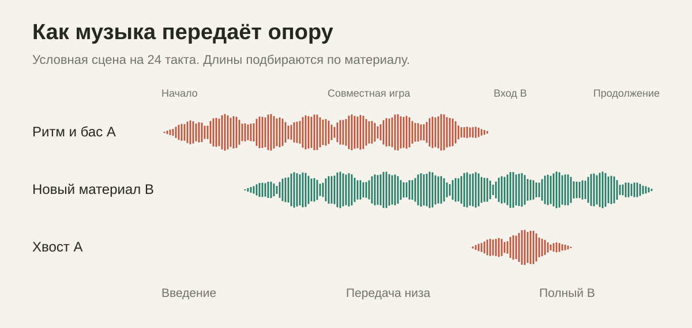
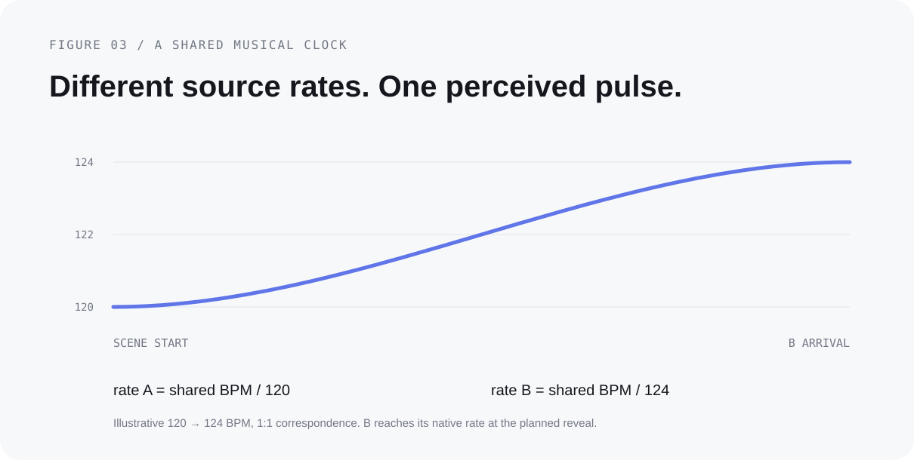
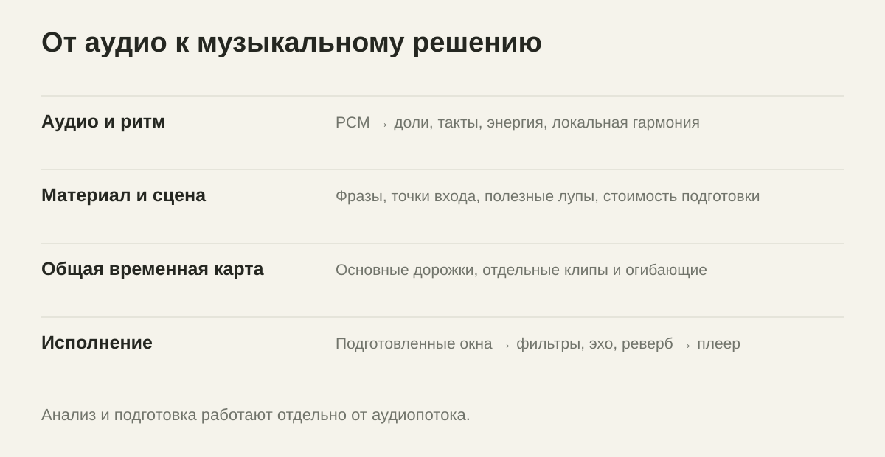

Переход —
часть музыки.
LADIO заранее находит фразы двух треков, собирает из них совместное звучание и передаёт движение новой музыке.
Открытый движок для своего плеера.
Версия 1.0.0.
Разные способы
свести два трека
Три примера музыкальной конструкции. В анимациях время сжато, а дорожки показаны схематически.
У A постепенно уходят высокие частоты. B появляется узкой полосой и расширяется к своей сильной доле. Фильтры движутся отдельно от громкости.
Как это звучит
Здесь будут короткие сравнения на одной паре треков: исходный материал, обычное наложение и результат LADIO.
Аудиопример для этой сцены ещё не опубликован.
Как добавить запись и сравнениеСначала музыка.
Потом обработка.
Мы начали с AutoMix-прототипа и референса Apple Music. Постепенно задача сместилась с набора эффектов на выбор материала и развитие перехода.
Просто убавить A и прибавить B недостаточно. Старый грув может ещё держать ритм, когда новая мелодия уже появилась. Вокальная мысль должна закончиться. У нового трека есть собственный момент раскрытия, который нельзя пропустить ради красивого хвоста.
LADIO хранит эти события отдельно: первое появление B, совместную игру, передачу баса, основной вход, последний слышимый элемент A и возврат к обычному воспроизведению. Поэтому эффект получает музыкальную задачу и своё время.

В каталоге — 17 автоматических DJ-сцен и ещё 8 вариантов непрерывного или ручного сведения. Короткая передача спектра занимает около двух тактов, длинное развитие с повторителем — около восемнадцати. Это предпочтительные длины, а не фиксированный таймер.
Все сцены, длительности и обработкаОдин темп
для всей сцены
Основные дорожки, луп и отдельный клип следуют согласованной временной карте.

В совместимом сведении B может начать в темпе A. Затем оба источника плавно приходят к новому пульсу, и B продолжает без скачка скорости. При слишком большой разнице движок рассматривает смену пульса через музыкальный мост.
Фильтры, эхо, реверберация, фланжер и ритмический гейт исполняются собственным DSP. Посыл в эффект и возврат из него имеют разные огибающие: оригинал уже может уйти, а его обработанный хвост ещё звучит.
Что работает
внутри
C++20-ядро, доступное через C ABI. Одна реализация для подготовки, рендера и воспроизведения.

Модели отмечают события.
Планировщик выбирает сцену.
В комплекте Beat This small0 для долей и сильных долей и две предоставленные автором LADIO переобученные ONNX-модели: активности музыкальных слоёв и границ фраз/секций.
Модели событий не создают стемы и не распознают текст. Они работают с независимым 24-кГц фронтендом; результат анализа кэшируется с привязкой к аудио и версиям весов. История обучения предоставленных моделей независимо не аудировалась.
Модели событий: назначение и происхождениеЧто уже проверено
- Ядро и воспроизведение
- Локально пройдены 7 из 7 проверок: временные карты, сцены, DSP, C ABI и целостность моделей.
- Сборки для платформ
- macOS arm64, Android arm64 и iOS arm64. Кросс-компиляция не заменяет проверку звука на устройстве.
- Сквозной рендер
- Синтетический микс длительностью 197 секунд: от известной разметки до полного аудиофайла.
Качество на произвольных песнях, сложные ритмические сетки и расход батареи требуют прослушиваний и измерений. Мы не заявляем точное совпадение с Apple Music или гарантированные 20 секунд подготовки на любом телефоне.
LADIO — независимая реализация. В открытом SDK нет приватных Apple-фреймворков, AU-пресетов или весов Apple.
Результаты проверок и оставшиеся вопросы